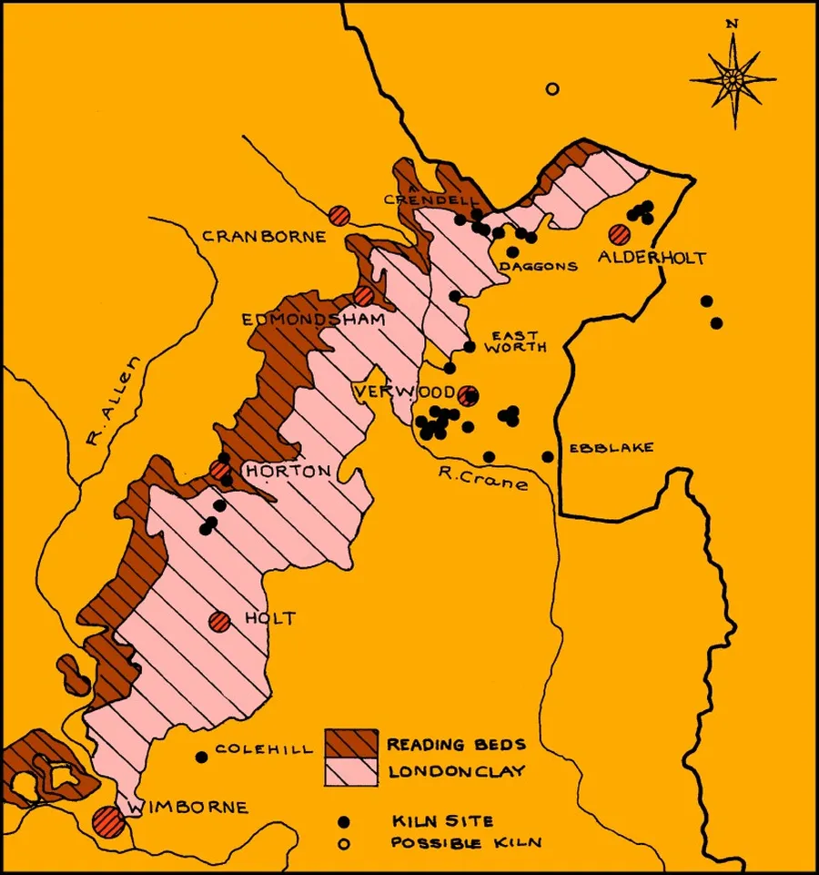
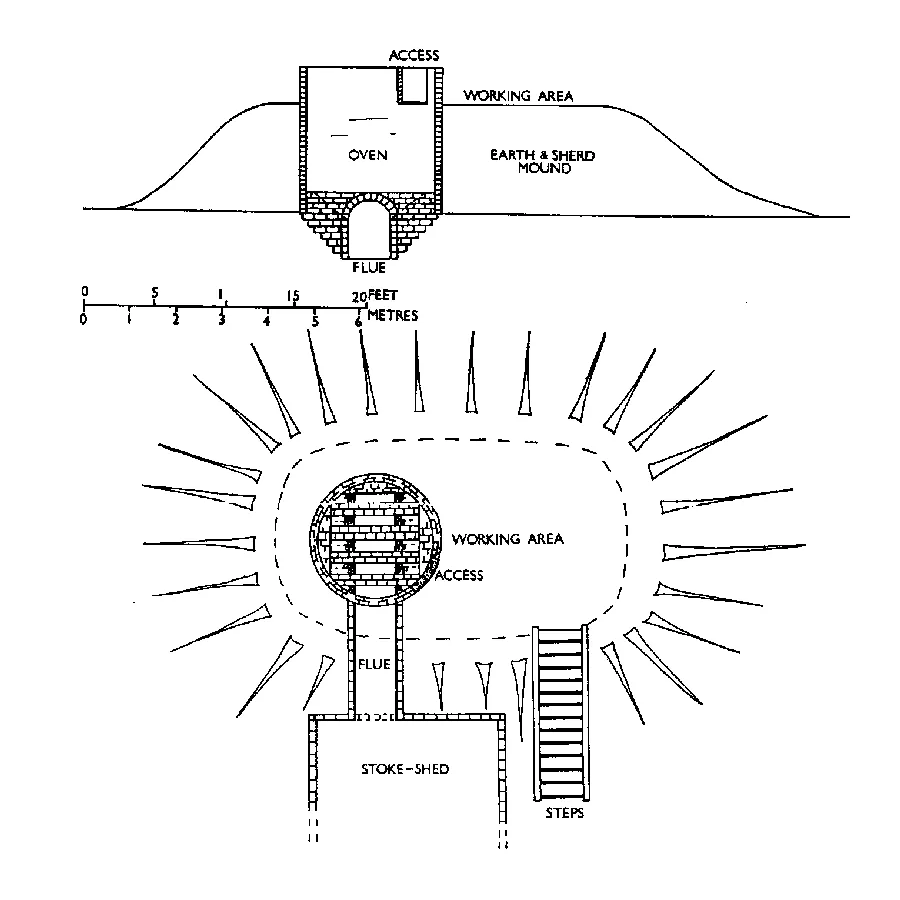
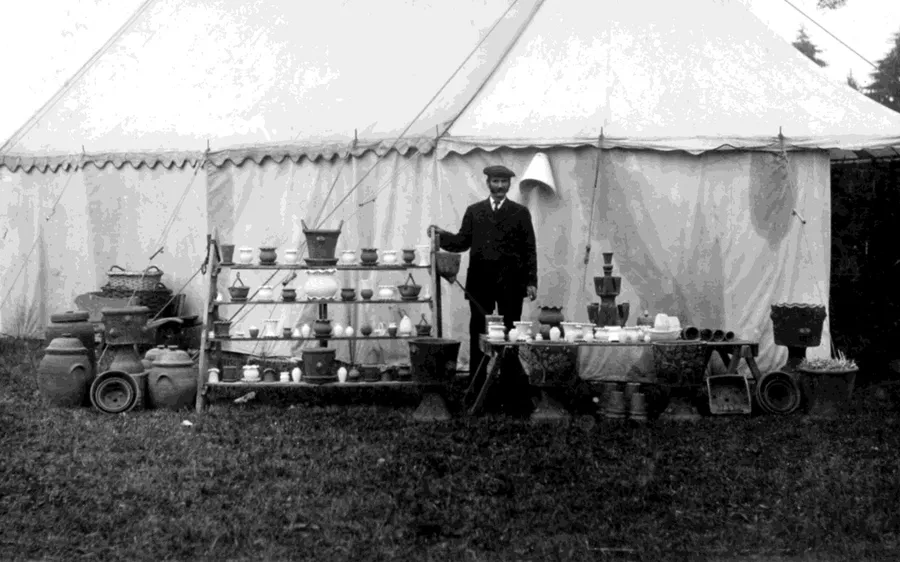
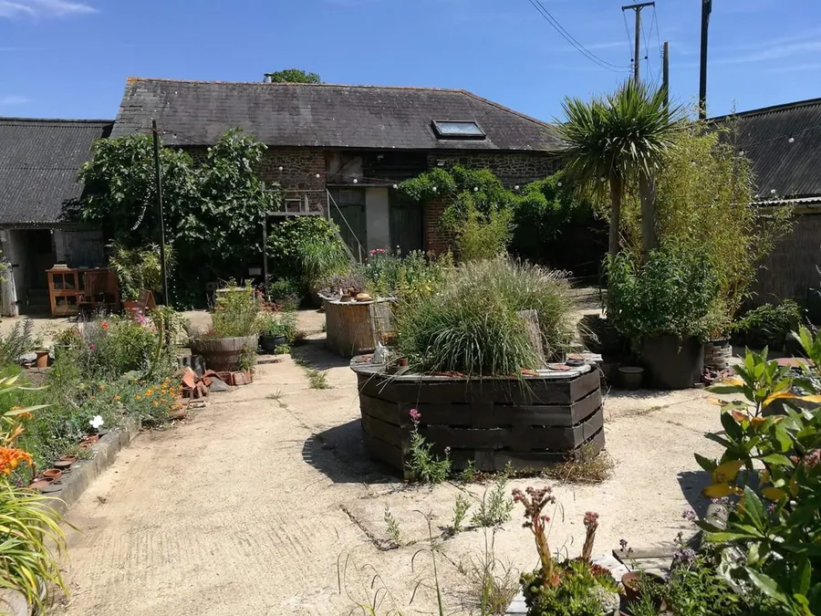
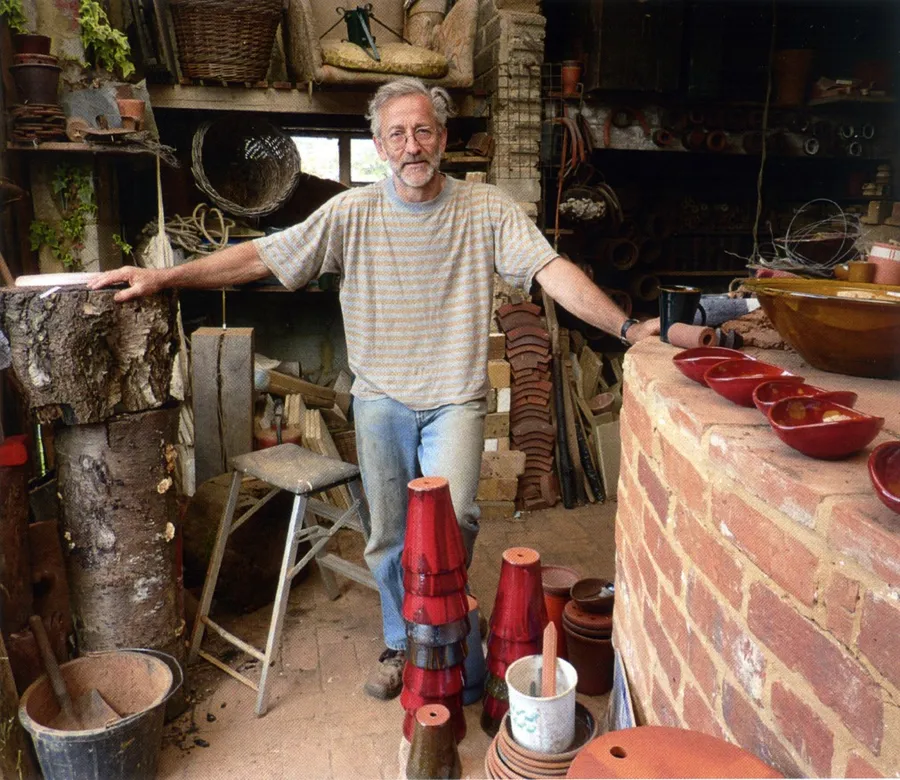

Potteries — Part I<
by Adrian King

The Parish straddles a narrow band of London Clay over Reading Beds situated between the chalk uplands of Cranborne Chase and the sandy heathland to the south and east. This band of clay extended from an area between Sandleheath and Rockbourne in a south-westerly direction to just north of Wimborne. The heaths of Cranborne and Alderholt Commons nearby were important because they supplied sand and firing wood that was needed by the potters.
From records it is known that a community of potters had become established on the edge of this heathland at Alderholt by the early 14th century. With this knowledge it is possible to speculate that there had been continuous potting activity in the area between Romano-British times and when records of the sites were first discovered.

In the late 18th and early 19th centuries there was a discovery of new deposits of clay on the western side of Crendell Common. The claywas found in the field’s which are to this day still known as Clay Grounds and Old Clay Grounds. Towards the end potters were digging clay at Holwell.
The potters were producing a good quality product using ferruginous and lead glazes.To satisfy the demand for domestic earthenware from the rapidly expanding population of the 17th and 18th centuries additional kilns were sited at Daggons and Crendell.

In a letter to the Marquess of Cranborne in 1832 it was estimated that the thirteen kilns in Verwood, Harbridge, Alderholt and Crendell employed about 325 people. This did not include spouses and family which would bring the figure to well over 500. In this year there were two kilns in Alderholt run by Richard Foster and John Viney, and four in Crendell run by James Foster, James Thorn, George Thorn and James Baker.
Improved communication especially rail transport was the downfall of the Alderholt kilns because it opened the market for mass produced Midland pottery. The last kilns operated in the area towards the end of the 19th century. The methods of East Dorset pottery manufacture had changed little over the years.
“Their products were hand thrown earthenwares with course green, yellow and orange glazes. Everyday articles such as jugs, dishes, bowls, large containers and the distinctive harvest bottles or Dorset Owls were produced.
"The pottery was distributed over a wide area by horse drawn wagons.”
In his article The Pottery People Roger Guttridge says
“The rather primitive process involved soaking the raw clay in water for three days. Then treading it three times into a sprinkling of sand on a brick floor with the ratio of sand to clay being about one to ten. After a final 'wedging' to remove impurities and air pockets the mixture was cut into lumps. Each weighing up to forty pounds depending on the size of the pots to be thrown.
“Most of the pottery was thrown on a wheel then dried in special drying sheds, lead glazed and eventually fired in a kiln. The Dorset kilns were usually open topped brick cylinders about ten foot in both height and diameter. They were surrounded by a mound of clay, soil and broken pots which provided insulation and support.
"Kilns were probably fired several times a year. It took three or four days to reach the required temperatures which must not have exceeded 1,000 degrees Centigrade. Potters judged the temperature by eye by studying the glow of the red-hot timbers.”
Verwood continued to be the centre for pottery production but this ended with the close of the Crossroads Pottery in 1952.

The last potter in the Alderholt Parish was probably Jonathan Garratt. He was a one-man potter producing a wide range of genuinely frost-proof garden pots at Hare Lane Farm. All fired exclusively with wood.
Local clay was refined at his pottery and produced subtle mellow colours on the finished ware. He made wall pots, alpine pans, long toms and a wide selection of planters. The large round kiln also fired glazed earthenware pots for the kitchen and table. Jugs, bowls, dishes, plates were all wood-fired.


Potters Bond.
Open clay-pits were a constant danger to grazing animals and travellers. The way around this problem was to compel the potters to purchase a bond before they started production of pots. This bond required that following extraction of the clay, a site would be left in a safe condition.
A few bonds exist and one is for Nicholas Francis of Alderholt
Bond of Nicholas Francis of Alderholt in the parish of Cranborne potter in £10 to the Earl of Salisbury, 25th March 8 George II, 1735.
The Earl as Lord of the Manor of Cranborne has granted Francis licence to dig and raise clay for his own use by proper workmen appointed by the Earl, upon the Earl’s waste land called Crendell Common, in that manor, for seven years, yearly rent five shillings.
The condition of this obligation is that Francis shall employ workmen for the above purpose and pay the above rent and shall fill up and level all such pits as shall be opened for digging and raising clay and shall contribute his share of charges towards repairing the King’s highway between Crendell Gate and an oak called Gold Oak on that Common leading from Cranborne towards Fordingbridge.
Also that he shall not cut or cause to be cut any turf, heath, furze or bushes on the said waste lands, to be burnt or employed by him in his kiln or otherwise for his carrying on of the trade of a potter, to the injury of the said Earl or his tenants in their rights in the said commons or waste lands.”
The bond money would be forfeit if the contract was broken. When he died in 1722, John Major of Alderholt had £20 ‘in bond.’